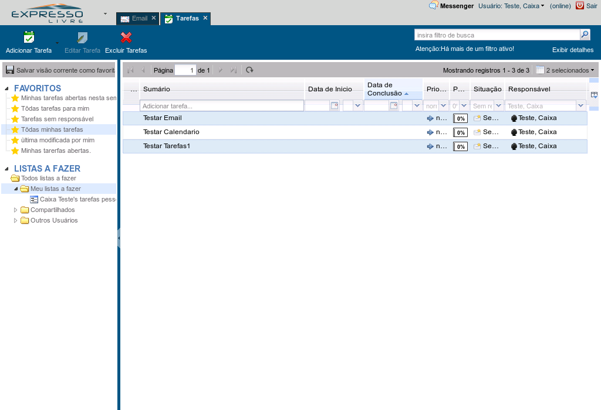
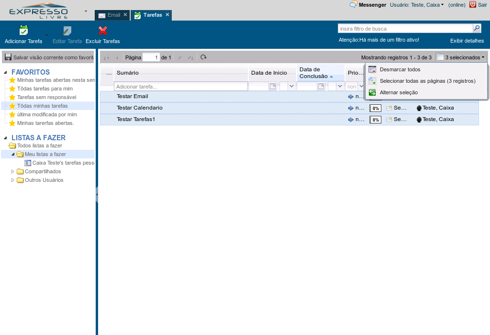

As tarefas são listadas na área principal do módulo Tarefas.
Referência (copie para o Mantis o texto em vermelho):
demo_.html?interacao=407
3
demonstracao
409
1
158
192_98_776_172_376_308_152_-16

(Etapa xx de 12)
Para selecionar uma tarefa, clique diretamente sobre ela. Várias tarefas podem ser selecionadas, mantendo-se a tecla control (Ctrl) pressionada e clicando-se uma a uma,
Referência (copie para o Mantis o texto em vermelho):
demo_.html?interacao=409
410
2
158
193_98_773_164_365_297_146_-16
(Etapa xx de 12)
ou, ainda, mantendo-se a tecla shift pressionada, pode-se selecionar uma série contínua.
Referência (copie para o Mantis o texto em vermelho):
demo_.html?interacao=410
4
demonstracao
411
1
159
854_96_110_27_644_151_261_-16
(Etapa xx de 12)
Outras operações de seleção estão no menu que se abre com um click no botão de seleção...Click no botão de seleção
Referência (copie para o Mantis o texto em vermelho):
demo_.html?interacao=411
5
demonstracao
412
1
160
719_122_243_71_641_216_196_-16

(Etapa xx de 12)
contendo opções para desmarcar todas, inverter a seleção na página ou selecionar todas as tarefas em todas as páginas.
Referência (copie para o Mantis o texto em vermelho):
demo_.html?interacao=412
6
demonstracao
413
1
161
0_124_16_165_0_318_10_-16
(Etapa xx de 12)
As listas a fazer, favoritos e subitens podem ser mostradas ou escondidas clicando-se no triângulo ao lado.Clique no triângulo das Listas a Fazer
Referência (copie para o Mantis o texto em vermelho):
demo_.html?interacao=413
7
demonstracao
414
1
162
195_225_751_18_225_262_-16_50
(Etapa xx de 12)
Tanto a Lista a fazer quanto as tarefas selecionadas aparecem destacadas em azul
Referência (copie para o Mantis o texto em vermelho):
demo_.html?interacao=414
415
2
162
699_97_264_25_336_42_324_60
(Etapa xx de 12)
As tarefas são separadas em páginas. Nesta área há informação de quantas tarefas estão nesta página, do total de tarefas existentes.
Referência (copie para o Mantis o texto em vermelho):
demo_.html?interacao=415
416
3
162
193_96_234_27_459_95_-16_10
(Etapa xx de 12)
Esta área é usada para navegar nas páginas: os botões de primeira página, página anterior, próxima página, última página e atualizar envolvem o campo para ir diretamente para um número de página.
Referência (copie para o Mantis o texto em vermelho):
demo_.html?interacao=416
417
4
162
948_124_22_58_644_223_297_-16
(Etapa xx de 12)
Na lista de tarefas, existe a opção de escolher as colunas que serão mostradas, clicando-se no botão ao lado das colunas.
Referência (copie para o Mantis o texto em vermelho):
demo_.html?interacao=417
418
5
162
587_126_103_31_371_186_264_-16
(Etapa xx de 12)
Se alguma coluna estiver muito estreita ou muito larga, o tamanho pode ser ajustado arrastando com o mouse a borda da coluna no cabeçalho.
Referência (copie para o Mantis o texto em vermelho):
demo_.html?interacao=418
8
demonstracao
419
1
163
577_120_106_42_369_195_255_-16
(Etapa xx de 12)
As tarefas podem ser ordenadas de forma crescente clicando-se em uma das colunas. Um segundo clique ordena de forma decrescente.Clique no cabeçalho de uma coluna
Referência (copie para o Mantis o texto em vermelho):